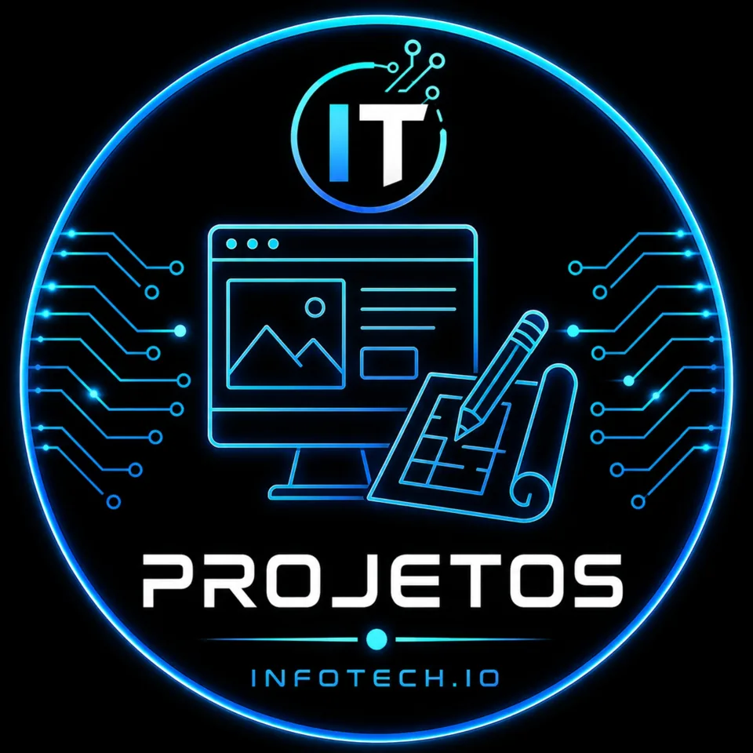
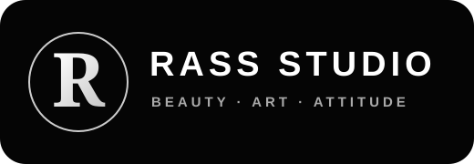

Portfólio InfoTech
Projetos reais. Resultado visível.
Veja trabalhos publicados e em evolução antes de escolher quem vai cuidar do seu projeto.
Quero meu projeto aqui
Portfólio InfoTech
Projetos
Projetos publicados e espaços reservados para os próximos trabalhos.

Rass StudioSite + agendamentoPublicado+Em brevePróximo projeto
+Em breveNovo case
+Em breveNovo case
+Em breveNovo case
Próximo case
Solicitar projetoO próximo projeto do portfólio pode ser o seu.
Envie sua ideia para avaliação.